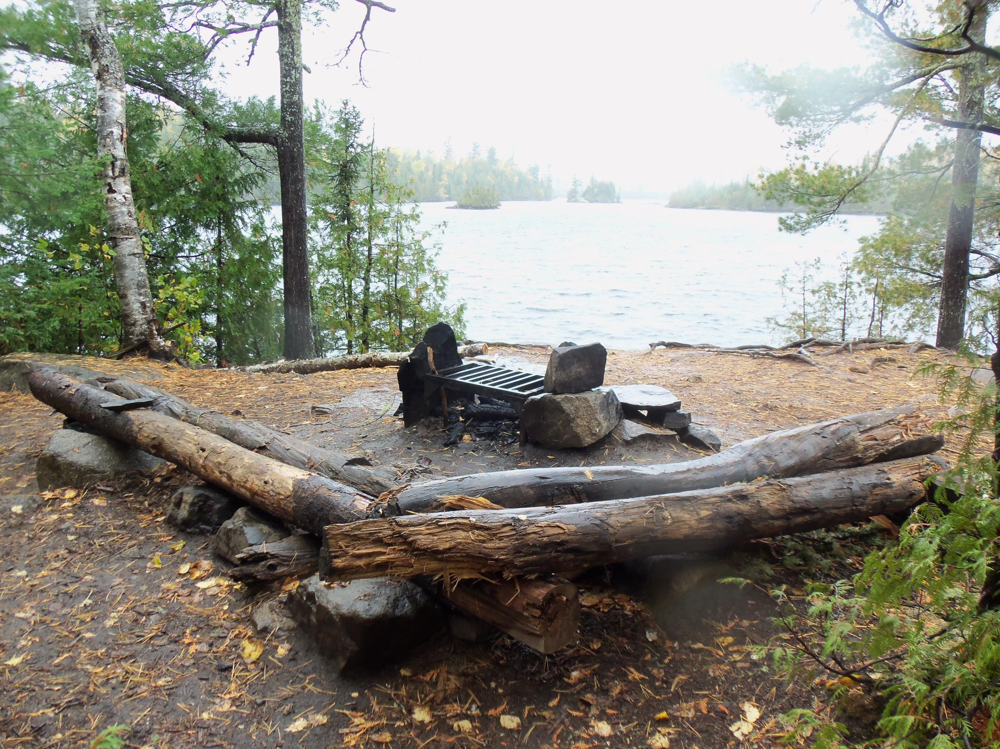
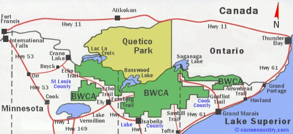

2018 Trip to Boundary Waters Canoe Area
Quick Links
BWCA Messageboards
The BWCA website is a community developed site with a list of outfitters and maps. It also has a huge messageboard with advice on fishing and gear.
Paddle Planner
The above website helps plan trip routes through the park.
Top Things To Do in BWCA
- Fishing
- Paddling
- Rock Climbing
Standard site at the BWCA

Standard setup in the BWCA

Map of BWCA

Gear List to survive the BWCA
Wildlife of the BWCA